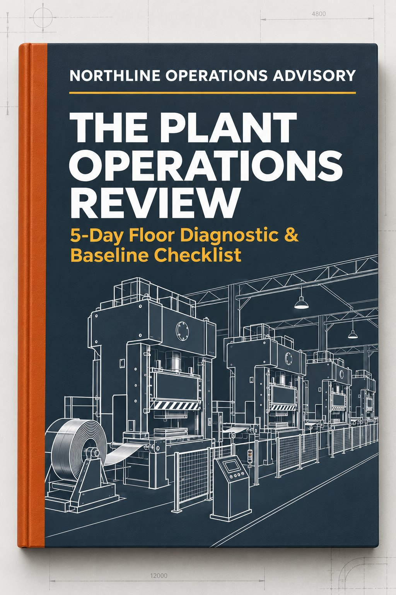

A practical five-day review for measuring losses, freeing capacity and setting a baseline your team can use.
Walk the value stream with each shift and agree the operating baseline before any change is made.
| Day and task | Owner | Done | |
|---|---|---|---|
| Day 1: walk the value stream with day, swing and night shifts | |||
| Day 1: agree how stops, short stops and changeovers are counted | |||
| Day 2: build the loss tree at the constraint | |||
| Day 3: trace WIP and the schedule against real capacity | |||
| Day 4: price each loss; build the 12-week payback model with finance | |||
| Day 5: plant manager signs the baseline; present the 90-day roadmap |
Separate availability, performance and quality losses at the constraint. Use machine counts, not shift reports.
| Factor | Measure | Your baseline | Largest loss |
|---|---|---|---|
| Availability | Run time / planned time | ||
| Performance | Ideal cycle / actual cycle | ||
| Quality | Good parts / total parts |
List every changeover element. Anything that can happen while the machine runs moves off the critical path.
| Element | Internal | External | Seconds |
|---|---|---|---|
Five minutes, standing at the constraint. Carry actions and ownership cleanly across shifts.
| Question | Answer | |
|---|---|---|
| What ran, against plan? | ||
| What stopped, and for how long? | ||
| Which actions are open, and who owns each? | ||
| What needs escalation to the area huddle? |
Want help running the review? Book a 30-minute partner conversation at northline.example/book, or call +1 (312) 555-0148.